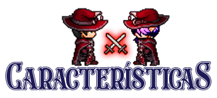

Children of Anima es un juego RPG en 2D, centrado en la exploración, aventura y la libertad de elección,
está ambientado en un mundo de fantasía que llevo desarrollando 15 años, crea tu personaje,
tu pasado y como iniciar en tu aventura, tus acciones tienen consecuencias y la gente reaccionará en un mundo vivo,
donde cada personaje tiene su historia, motivación e incluso su propia agenda, lo que hará que vayan de su casa al trabajo,
a pasar el rato con sus conocidos o realizar otras actividades dependiendo de la hora del día.
El mundo también estará vivo, ya que el paso del tiempo, el clima y las estaciones avanzarán sin necesidad de que el jugador
cumpla sus tareas o no, aquí no serás el elegido, serás uno más en este mundo, donde deberás buscarte la vida, de la forma que quieras (o puedas).

Una historia abierta, con elecciones morales y que definirán cómo los demás te ven y se comportan.
Sistema de paso del tiempo, ciclo día y noche y clima dinámico.
Combate de acción en tiempo real, con diferentes clases para elegir y árbol de habilidades único para cada una.
Personalización de personaje, raza, género, apariencia y equipamiento visual.
Múltiples inicios dependiendo del trasfondo que elijamos, cada uno con su propia historia personal diferente al resto.
Diferentes oficios como Cocina, Forja, Alquimia, Pesca... recolecta recursos y fabrica lo que quieras.
El mundo avanzará contigo o sin ti, habrán tanto tramas globales como personales, las tramas globales avanzarán al cabo del tiempo
aunque no intervengas, aunque tendrás la oportunidad de cambiar el resultado dependiendo de tus acciones, el no hacer nada, también es una opción...